1. Data Source: PISA 2022
PISA is the OECD Programme for International Student Assessment. PISA measures 15-year-olds’ ability to use their reading, mathematics and science knowledge and skills to meet real-life challenges. In this report, we downloaded the student questionnaire data file from PISA 2022 Database.
The data set used in student question data file is named as “cy08msp_stu_qqq.sas7bdat.sas”.
Show the code
The student questionnaire data set has dimensions of 613744 rows by 1279 columns.The student-questionnaire data set includes 613,744 students from all over the world, and each of them has 1,279 information being recorded (including estimates of student performance and parent-questionnaire data). In this report, only Singaporean students will be visually analysed. By filtering, we can get a number of 6,606 Singapore students’ data.
Show the code
stu_qqq_SG <- stu_qqq %>%
filter(CNT == "SGP")
write_rds(stu_qqq_SG, "data/stu_qqq_SG.rds")
stu_qqq_SG <- read_rds("data/stu_qqq_SG.rds")
dimensions_SG <- dim(stu_qqq_SG)
cat("The data of Singaporean students in the student questionnaire data set has dimensions of", dimensions_SG[1], "rows by", dimensions_SG[2], "columns.")The data of Singaporean students in the student questionnaire data set has dimensions of 6606 rows by 1279 columns.2. Data Preparation
The aim of this report is to conduct analysis on the following two tasks:
The distribution of Singapore students’ performance in mathematics, reading, and science.
The relationship between these performances with schools, gender and socioeconomic status of the students.
By examining the data of Singaporean students, it is observed that each subject—mathematics, reading, and science—has 10 plausible values(PV). To facilitate the calculation of scores for each subject, the average of these 10 PVs is taken as the score for that particular subject. The sum of the averages for the three subjects is then calculated, and the overall average is considered as the student’s overall knowledge performance score.
The socioeconomic status is most commonly theoretically conceptualized based on “the big 3” (occupational status, education, and income). By PISA 2022 Technical Report, socioeconomic status is represented by ESCS score. The ESCS score was based on three indicators: highest parental occupation status (HISEI), highest education of parents in years (PAREDINT), and home possessions (HOMEPOS).
In this report, only “Vocational Training” and “Home Possessions” from the above figure will be used as representatives for the analysis of socioeconomic status. By examining the student questionnaire, relevant questions pertaining to “Vocational Training” and “Home Possessions” have been selected to streamline data processing.
“Vocational Training” is reflected as the following two questions in the questionnaire.
| ST006 Mother’s Educational level | ST008 Father’s Educational level |
|---|---|
By comparing parents’ educational levels, this report will analyze student performance based on the highest education level attained by the parents.
Selecting the following questions in the question to represent “Home Possessions”:
| ST251 | ST253 | ST255 |
|---|---|---|
 |
This report represents “Home Possessions” by adding the first six values of ST251 with the values of ST253 and ST255.
3. Knowledge Performance
3.1 Mean of Plausible Values
Calculate the PV mean for each subject to obtain the representative score for each subject. Add the mean scores of the three subjects and take the average to derive the representative score for the overall knowledge performance.
We can get a glimpse of the calculation results from the following output:
Show the code
Avg_PVMath <- rowMeans(stu_qqq_SG[, c("PV1MATH", "PV2MATH", "PV3MATH", "PV4MATH", "PV5MATH", "PV6MATH", "PV7MATH", "PV8MATH", "PV9MATH", "PV10MATH")])
Avg_PVRead <- rowMeans(stu_qqq_SG[, c("PV1READ", "PV2READ", "PV3READ", "PV4READ", "PV5READ", "PV6READ", "PV7READ", "PV8READ", "PV9READ", "PV10READ")])
Avg_PVScience <- rowMeans(stu_qqq_SG[, c("PV1SCIE", "PV2SCIE", "PV3SCIE", "PV4SCIE", "PV5SCIE", "PV6SCIE", "PV7SCIE", "PV8SCIE", "PV9SCIE", "PV10SCIE")])
PV_Avg <- data.frame(
CNTSTUID = stu_qqq_SG$CNTSTUID,
Avg_PVMath = Avg_PVMath,
Avg_PVRead = Avg_PVRead,
Avg_PVScience = Avg_PVScience
)
PV_Avg$Avg_PVOverall <- rowMeans(PV_Avg[, c("Avg_PVMath", "Avg_PVRead", "Avg_PVScience")], na.rm = TRUE)
write_rds(PV_Avg, "data/stu_qqq_SG_PV_Avg.rds")
head(PV_Avg) CNTSTUID Avg_PVMath Avg_PVRead Avg_PVScience Avg_PVOverall
1 70200001 605.2533 667.4296 639.7873 637.4901
2 70200002 689.9528 627.6078 672.0703 663.2103
3 70200003 676.7768 582.9252 660.0384 639.9135
4 70200004 401.0528 361.3969 343.6425 368.6974
5 70200005 436.1151 475.6763 479.2390 463.6768
6 70200006 518.1055 431.4652 476.0031 475.1913Each student’s Avg_PVMath, Avg_PVRead, and Avg_PVScience values reflect their performance in math, reading, and science, respectively. Avg_PVOverall represents student’s overall knowledge performance. For example, the first row above shows the performance scores of math, reading and science for student “70200001” is 605.2533, 667.4296, 639.7873, respectively. The overall knowledge performance score of student “70200001” is 637.4901.
3.2 Distribution of Performance Scores
3.2.1 One Subject
First, let’s see the frequency of the performance scores by subjects.
Histogram
Show the code
p1 <- ggplot(data = PV_Avg, aes(x=Avg_PVMath)) +
geom_histogram(bins=20, boundary = 100, color="grey25", fill="grey90") +
geom_vline(aes(xintercept = mean(Avg_PVMath), linetype="Mean", color="Mean"), linewidth=0.5) +
geom_vline(aes(xintercept = median(Avg_PVMath), linetype="Median", color="Median"), linewidth=0.5) +
scale_linetype_manual(name = "Statistic", values = c(Mean = "dashed", Median = "dashed")) +
scale_color_manual(name = "Statistic", values = c(Mean = "blue", Median = "red")) +
ggtitle("Frequency of Math Scores") +
labs(color = "Statistic", x="Math Score", size = 3) +
theme_classic() +
theme(
plot.title = element_text(size = 8),
axis.title = element_text(size = 8),
legend.text = element_text(size = 8),
legend.title = element_text(size = 8))
p2 <- ggplot(data = PV_Avg, aes(x=Avg_PVRead)) +
geom_histogram(bins=20, boundary = 100, color="grey25", fill="grey90") +
geom_vline(aes(xintercept = mean(Avg_PVRead), linetype="Mean", color="Mean"), linewidth=0.5) +
geom_vline(aes(xintercept = median(Avg_PVRead), linetype="Median", color="Median"), linewidth=0.5) +
scale_linetype_manual(name = "Statistic", values = c(Mean = "dashed", Median = "dashed")) +
scale_color_manual(name = "Statistic", values = c(Mean = "blue", Median = "red")) +
ggtitle("Frequency of Reading Scores") +
labs(color = "Statistic", x = "Reading Score", size = 3) +
theme_classic() +
theme(
plot.title = element_text(size = 8),
axis.title = element_text(size = 8),
legend.text = element_text(size = 8),
legend.title = element_text(size = 8))
p3 <- ggplot(data = PV_Avg, aes(x=Avg_PVScience)) +
geom_histogram(bins=20, boundary = 100, color="grey25", fill="grey90") +
geom_vline(aes(xintercept = mean(Avg_PVScience), linetype="Mean", color="Mean"), linewidth=0.5) +
geom_vline(aes(xintercept = median(Avg_PVScience), linetype="Median", color="Median"), linewidth=0.5) +
scale_linetype_manual(name = "Statistic", values = c(Mean = "dashed", Median = "dashed")) +
scale_color_manual(name = "Statistic", values = c(Mean = "blue", Median = "red")) +
ggtitle("Frequency of Science Scores") +
labs(color = "Statistic", x="Science Scores", size = 3) +
theme_classic() +
theme(
plot.title = element_text(size = 8),
axis.title = element_text(size = 8),
legend.text = element_text(size = 8),
legend.title = element_text(size = 8))
p4 <- ggplot(data = PV_Avg, aes(x=Avg_PVOverall)) +
geom_histogram(bins=20, boundary = 100, color="grey25", fill="grey90") +
geom_vline(aes(xintercept = mean(Avg_PVOverall), linetype="Mean", color="Mean"), linewidth=0.5) +
geom_vline(aes(xintercept = median(Avg_PVOverall), linetype="Median", color="Median"), linewidth=0.5) +
scale_linetype_manual(name = "Statistic", values = c(Mean = "dashed", Median = "dashed")) +
scale_color_manual(name = "Statistic", values = c(Mean = "blue", Median = "red")) +
ggtitle("Frequency of Overall Knowledge Performance Scores") +
labs(color = "Statistic", x="Overall Knowledge Performance Scores", size = 3) +
theme_classic() +
theme(
plot.title = element_text(size = 8),
axis.title = element_text(size = 8),
legend.text = element_text(size = 8),
legend.title = element_text(size = 8))
p1+p2+p3+p4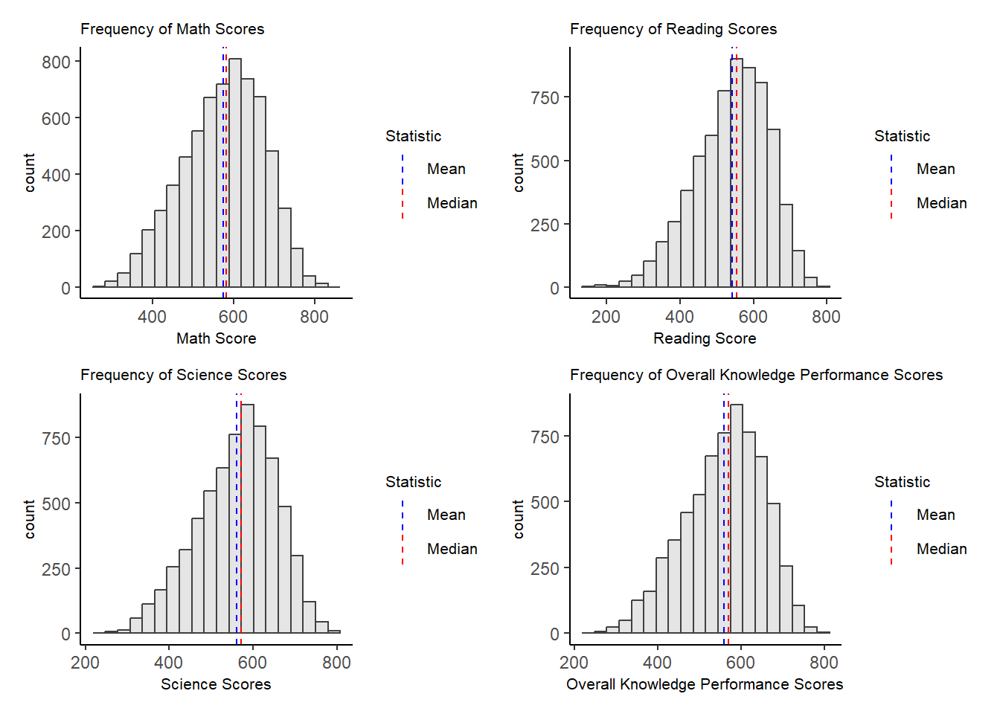
The four histograms above all illustrate a left-skewed distribution, indicating that the scores are concentrated around higher values. Additionally, the dashed line in the graphs shows a mean score lower than the median. This could be attributed to some students with extremely low scores, pulling down the mean.
Box plot
Show the code
PV_Avg_tidy <- PV_Avg %>%
pivot_longer(cols = c(Avg_PVMath, Avg_PVRead, Avg_PVScience, Avg_PVOverall), names_to = "Subject", values_to = "Score")
max_values <- PV_Avg_tidy %>% group_by(Subject) %>% summarise(max_value = max(Score))
ggplot(PV_Avg_tidy, aes(x = Subject, y = Score)) +
geom_boxplot(fill = "forestgreen", color = "white") +
facet_grid(. ~ Subject, scales = "free_x") +
geom_hline(data = max_values, aes(yintercept = max_value, linetype = "Max"), color = "yellow", show.legend = FALSE, linewidth = 0.8) +
geom_text(data = max_values, aes(x = Subject, y = max_value, label = sprintf("Maximum: %.2f", max_value)), size = 3, vjust = -0.5, hjust = 0.5, color = "yellow") +
geom_hline(aes(yintercept = median(Score), linetype = "Median"), color = "red",show.legend = FALSE, linewidth = 0.8) +
coord_cartesian(ylim = range(PV_Avg_tidy$Score)) +
ggtitle("Box Plots of Performance Scores") +
theme_dark()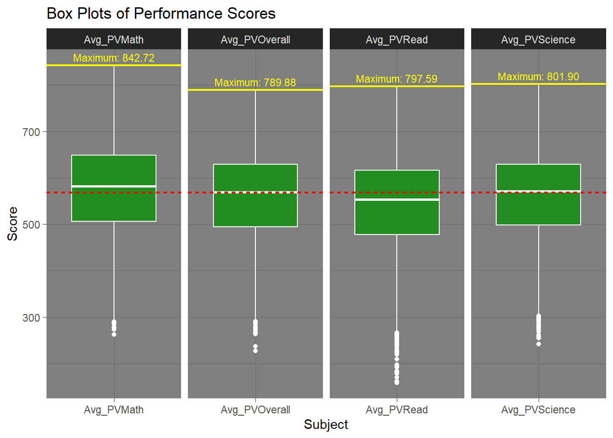
The four box plots reveal:
Some students scored extremely low, especially in reading, followed by science and math.
Median scores follow the order: Math > Science ≈ Overall > Reading.
Maximum scores follow the order: Math > Science > Reading > Overall.
Over 75% of students scored above 500 in math, and 75% of students scored above 500 in science, while less than 75% scored above 500 in reading. Nearly 75% of students scored above 500 in overall knowledge performance, with a few extremely low scorers below 300.
Next, by using density curve, we can see more of the distribution and central tendency of the performance scores.
Density curve
Show the code
peak_math <- density(PV_Avg$Avg_PVMath)$x[which.max(density(PV_Avg$Avg_PVMath)$y)]
peak_read <- density(PV_Avg$Avg_PVRead)$x[which.max(density(PV_Avg$Avg_PVRead)$y)]
peak_science <- density(PV_Avg$Avg_PVScience)$x[which.max(density(PV_Avg$Avg_PVScience)$y)]
peak_overall <- density(PV_Avg$Avg_PVOverall)$x[which.max(density(PV_Avg$Avg_PVOverall)$y)]
ggplot(data = PV_Avg) +
geom_density(aes(x = Avg_PVMath, color = "Math"), fill = "darkblue", alpha = 0.5) +
geom_density(aes(x = Avg_PVRead, color = "Reading"), fill = "darkgreen", alpha = 0.5) +
geom_density(aes(x = Avg_PVScience, color = "Science"), fill = "darkred", alpha = 0.5) +
geom_density(aes(x = Avg_PVOverall, color = "Overall"), fill = "orange", alpha = 0.5) +
ggtitle("Density of Performance Scores") +
labs(x = "Average of PV") +
geom_vline(aes(xintercept = peak_math, color = "Math"), linetype = "dashed", linewidth = 1) +
geom_vline(aes(xintercept = peak_read, color = "Reading"), linetype = "dashed", linewidth = 1) +
geom_vline(aes(xintercept = peak_science, color = "Science"), linetype = "dashed", linewidth = 1) +
geom_vline(aes(xintercept = peak_overall, color = "Overall"), linetype = "dashed", linewidth = 1) +
geom_text(aes(x = peak_math, y = 0, label = sprintf("Math: %.2f", peak_math)),
vjust = - 0.5, hjust = 0.2, color = "royalblue", size = 3.5) +
geom_text(aes(x = peak_read, y = 0, label = sprintf("Reading: %.2f", peak_read)),
vjust = - 3.5, hjust = 0.2, color = "lightgreen", size = 3.5) +
geom_text(aes(x = peak_science, y = 0, label = sprintf("Science: %.2f", peak_science)),
vjust = - 8, hjust = 0.2, color = "tomato", size = 3.5) +
geom_text(aes(x = peak_overall, y = 0, label = sprintf("Overall: %.2f", peak_overall)),
vjust = - 12, hjust = 0.5, color = "yellow", size = 3.5) +
scale_color_manual(values = c("Math" = "royalblue", "Reading" = "lightgreen", "Science" = "tomato", "Overall" = "yellow"), name = "Subject") +
theme_classic() +
labs(x = "Score", y = "Density") +
theme(
legend.position = c(0.9, 0.8),
legend.text = element_text(size = 8),
legend.key.size = unit(5, "mm")
)
The four density curves above reveal:
The performance for all three subjects and overall show a tendency towards a leftward skew in their distributions.
Math scores are centered around 600, science scores around 580, and reading scores around 560. Overall, students’ knowledge performance scores are centered around 590.
Last, let’s present the distribution of performance scores by violin plots.
Violin plot
Show the code
ggplot(data = PV_Avg) +
geom_violin(aes(x = "Math", y = Avg_PVMath, fill = "Math"), position = "dodge") +
geom_violin(aes(x = "Reading", y = Avg_PVRead, fill = "Reading"), position = "dodge") +
geom_violin(aes(x = "Science", y = Avg_PVScience, fill = "Science"), position = "dodge") +
geom_violin(aes(x = "Overall", y = Avg_PVOverall, fill = "Overall"), position = "dodge") +
ggtitle("Violin Plot of Performance Scores") +
labs(x = "Subject", y = "Score", fill = "Subject") +
theme_classic() The similarity in the thickness of the violin plots above suggests that the scores for mathematics, reading, science, and overall performance share a certain degree of similarity in the central tendency and dispersion of their data distributions. However, the violin plot for reading exhibits a noticeably longer tail, indicating that the values for reading scores in the tail are relatively scattered, with the presence of more outliers. In contrast, the tails for the other two subjects as well as the overall scores are shorter, indicating a relatively concentrated distribution of data in the lower score range.
3.2.2 Two Subjects
Now, let’s see if there is any correlation between the scores in any two subjects.
Show the code
p5 <- ggplot(data = PV_Avg,
aes(x = Avg_PVMath,
y = Avg_PVRead)) +
geom_point(color = "royalblue") +
geom_smooth(formula = y ~ x, method = lm, color = "black") +
geom_text(aes(x = max(Avg_PVMath), y = max(Avg_PVRead),
label = paste("y = ", round(coef(lm(Avg_PVRead ~ Avg_PVMath))[2], 2), "x + ", round(coef(lm(Avg_PVRead ~ Avg_PVMath))[1], 2))),
hjust = 1.5, vjust = 1, color = "black", size = 4) +
ggtitle("Math vs Reading") +
labs(x = "Math Score", y = "Reading Score", color = "Math Score") +
theme_classic()
p6 <- ggplot(data = PV_Avg,
aes(x = Avg_PVMath,
y = Avg_PVScience)) +
geom_point(color = "forestgreen") +
geom_smooth(formula = y ~ x, method = lm, color = "black") +
geom_text(aes(x = max(Avg_PVMath), y = max(Avg_PVScience),
label = paste("y = ", round(coef(lm(Avg_PVScience ~ Avg_PVMath))[2], 2), "x + ", round(coef(lm(Avg_PVScience ~ Avg_PVMath))[1], 2))),
hjust = 1.5, vjust = 1, color = "black", size = 4) +
ggtitle("Math vs Science") +
labs(x = "Math Score", y = "Science Score", color = "Math Score") +
theme_classic()
p7 <- ggplot(data = PV_Avg,
aes(x = Avg_PVRead,
y = Avg_PVScience)) +
geom_point(color = "tomato") +
geom_smooth(formula = y ~ x, method = lm, color = "black") +
geom_text(aes(x = max(Avg_PVRead), y = max(Avg_PVScience),
label = paste("y = ", round(coef(lm(Avg_PVScience ~ Avg_PVRead))[2], 2), "x + ", round(coef(lm(Avg_PVScience ~ Avg_PVRead))[1], 2))),
hjust = 1.5, vjust = 1, color = "black", size = 4) +
ggtitle("Reading vs Science") +
labs(x = "Reading Score", y = "Science Score", color = "Reading Score") +
theme_classic()
p5/p6|p7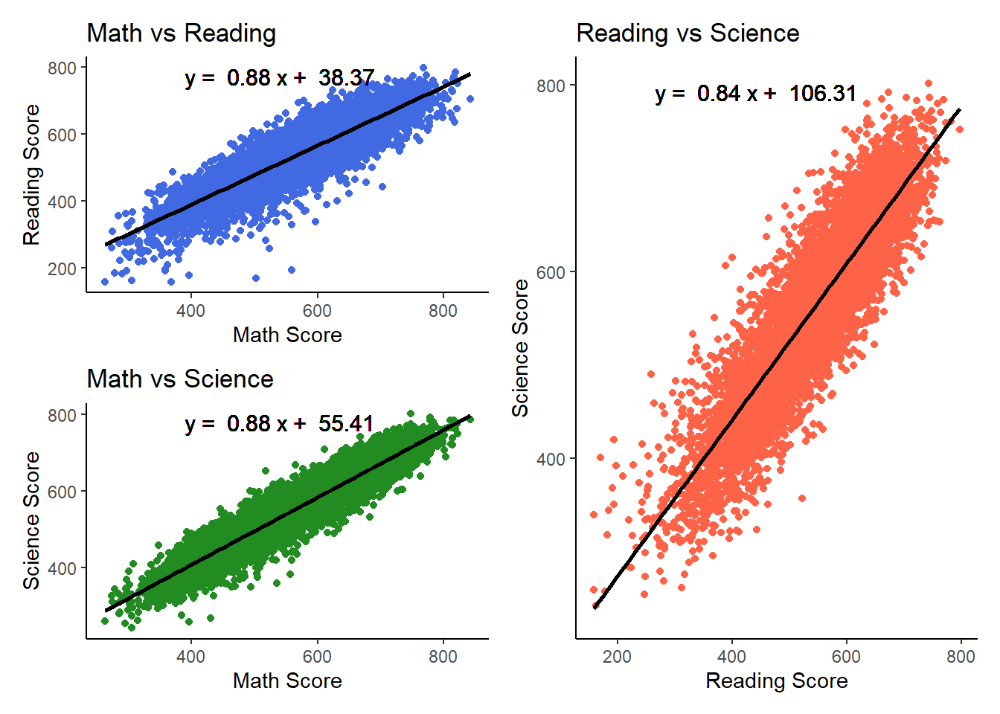
From the above three plots and their respective fit curves, it can be observed that the scores of the three subjects are positively correlated in pairs. As the scores in math increase, the scores in reading and science also increase, with science scores being higher. Similarly, when reading scores are higher, science scores also tend to be higher.
3.2.3 Three Subjects
Next, let’s see if there is any relationship among three subject’s scores.

Show the code
ggplot(data = PV_Avg,
aes(x = Avg_PVMath,
y = Avg_PVScience,
color = Avg_PVRead)) +
geom_point() +
ggtitle("Math vs Science with Reading") +
labs(x = "Math Score", y = "Science Score", color = "Reading Score") +
scale_color_continuous("Reading Score", breaks = seq(200, 800, by = 100),
low = "darkgreen", high = "lightgreen") +
theme_clean()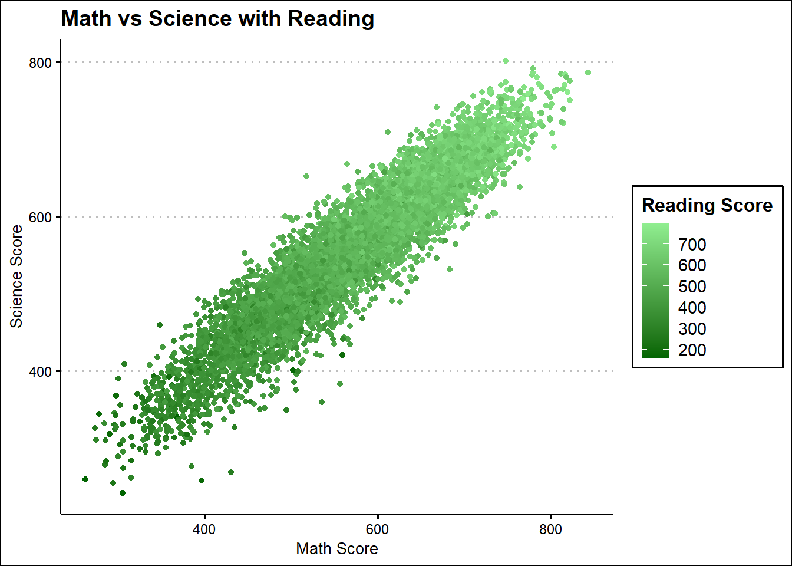
Show the code
ggplot(data = PV_Avg,
aes(x = Avg_PVRead,
y = Avg_PVScience,
color = Avg_PVMath)) +
geom_point() +
ggtitle("Reading vs Science with Math") +
labs(x = "Reading Score", y = "Science Score", color = "Math Score") +
scale_color_continuous("Math Score", breaks = seq(200, 800, by = 100),
low = "red", high = "pink") +
theme_clean()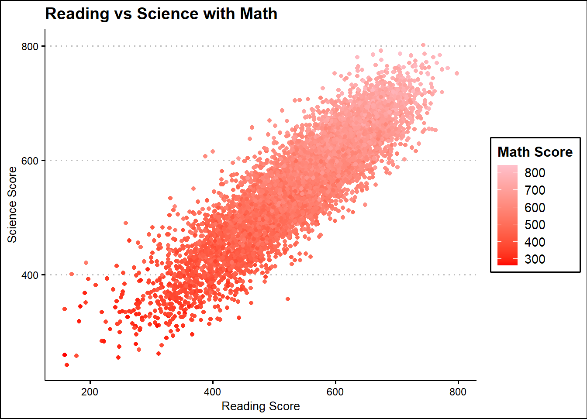
From the three colored scatter plots above, we can observe a positive trend: as the scores of any two subjects increase, the score of the third subject also tends to rise. This is visually represented by lighter colors and higher values towards the upper right corner. Conversely, when the scores of any two subjects decrease, the score of the third subject tends to decrease as well, reflected in darker colors and lower values towards the lower left corner. This pattern suggests a positive correlation among the performance scores of the three subjects, highlighting that higher scores in one subject are associated with higher scores in the others.
3.3 Summary
After analyzing the distribution of scores in different subjects, we can draw the following conclusions:
Singaporean students excel in mathematics, followed by science, with reading being the subject where they perform least well.
There is a correlation between the scores in the three subjects; in general, students with higher scores tend to perform well across all three subjects, while students with lower scores tend to have lower scores in all three subjects.
4. Influencing Factors
In this section, the influence of gender, school, and socioeconomic status (parents’ highest education level and home possessions) on students’ performance scores will be analyzed sequentially.
4.1 Gender
Let’s incorporate the gender indicator into the analysis.
Show the code
CNTSTUID Avg_PVMath Avg_PVRead Avg_PVScience Avg_PVOverall gender
1 70200001 605.2533 667.4296 639.7873 637.4901 1
2 70200002 689.9528 627.6078 672.0703 663.2103 2
3 70200003 676.7768 582.9252 660.0384 639.9135 2
4 70200004 401.0528 361.3969 343.6425 368.6974 2
5 70200005 436.1151 475.6763 479.2390 463.6768 1
6 70200006 518.1055 431.4652 476.0031 475.1913 1In the student questionnaire data set, the column “ST004D01T” records student’s gender, “1” represent female, “2” represent male. In the student questionnaire, the question “ST004Q01TA” represents student’s gender.
4.1.1 Analyse
let’s see the frequency of performance scores in each subjects by gender.
Show the code
p8 <- ggplot(data = PV_Avg_gender,
aes(x = Avg_PVMath,
fill = as.factor(gender))) +
geom_histogram(bins = 20,
color = "black") +
scale_fill_manual(values = c("1" = "pink", "2" = "dodgerblue"),
breaks = c("1", "2"),
labels = c("Female", "Male")) +
labs(fill = "Gender", x = "Math Score") +
ggtitle("Frequency of Math Scores by Gender") +
theme_classic() +
theme(
plot.title = element_text(size = 8),
axis.title = element_text(size = 8),
legend.text = element_text(size = 8),
legend.title = element_text(size = 8))
p9 <- ggplot(data = PV_Avg_gender,
aes(x = Avg_PVRead,
fill = as.factor(gender))) +
geom_histogram(bins = 20,
color = "black") +
scale_fill_manual(values = c("1" = "pink", "2" = "dodgerblue"),
breaks = c("1", "2"),
labels = c("Female", "Male")) +
labs(fill = "Gender", x = "Reading Score") +
ggtitle("Frequency of Reading Scores by Gender") +
theme_classic() +
theme(
plot.title = element_text(size = 8),
axis.title = element_text(size = 8),
legend.text = element_text(size = 8),
legend.title = element_text(size = 8))
p10 <- ggplot(data = PV_Avg_gender,
aes(x = Avg_PVScience,
fill = as.factor(gender))) +
geom_histogram(bins = 20,
color = "black") +
scale_fill_manual(values = c("1" = "pink", "2" = "dodgerblue"),
breaks = c("1", "2"),
labels = c("Female", "Male")) +
labs(fill = "Gender", x = "Science Score") +
ggtitle("Frequency of Science Scores by Gender") +
theme_classic() +
theme(
plot.title = element_text(size = 8),
axis.title = element_text(size = 8),
legend.text = element_text(size = 8),
legend.title = element_text(size = 8))
p11 <- ggplot(data = PV_Avg_gender,
aes(x = Avg_PVOverall,
fill = as.factor(gender))) +
geom_histogram(bins = 20,
color = "black") +
scale_fill_manual(values = c("1" = "pink", "2" = "dodgerblue"),
breaks = c("1", "2"),
labels = c("Female", "Male")) +
labs(fill = "Gender", x = "Overall Score") +
ggtitle("Frequency of Overall Scores by Gender") +
theme_classic() +
theme(
plot.title = element_text(size = 8),
axis.title = element_text(size = 8),
legend.text = element_text(size = 8),
legend.title = element_text(size = 8))
p8+p9+p10+p11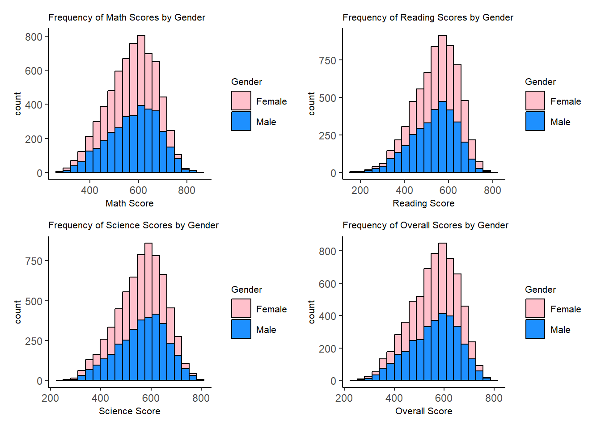
From the three histograms above:
Male and female performances are fairly balanced in all three subjects and overall, with similar lengths of the bars across most score ranges, except for scores above 700.
In the high-score range (above 700), particularly near 800, by observing the lengths of the bars, it can be seen that there are more males excelling in math, science and overall, while females excel in reading.
Next, let’s explore more by density curve.
Show the code
p12 <- ggplot(data = PV_Avg_gender,
aes(x = Avg_PVMath,
color = as.factor(gender))) +
geom_density(alpha = 0, linewidth = 0.8) +
scale_color_manual(values = c("1" = "deeppink", "2" = "dodgerblue"),
breaks = c("1", "2"),
labels = c("Female", "Male")) +
labs(color = "Gender", x = "Math Score") +
ggtitle("Distribution of Math Scores by Gender") +
theme_classic()+
theme(
plot.title = element_text(size = 8),
axis.title = element_text(size = 8),
legend.text = element_text(size = 8),
legend.title = element_text(size = 8))
p13 <- ggplot(data = PV_Avg_gender,
aes(x = Avg_PVRead,
color = as.factor(gender))) +
geom_density(alpha = 0, linewidth = 0.8) +
scale_color_manual(values = c("1" = "deeppink", "2" = "dodgerblue"),
breaks = c("1", "2"),
labels = c("Female", "Male")) +
labs(color = "Gender", x = "Reading Score") +
ggtitle("Distribution of Reading Scores by Gender") +
theme_classic() +
theme(
plot.title = element_text(size = 8),
axis.title = element_text(size = 8),
legend.text = element_text(size = 8),
legend.title = element_text(size = 8))
p14 <- ggplot(data = PV_Avg_gender,
aes(x = Avg_PVScience,
color = as.factor(gender))) +
geom_density(alpha = 0, linewidth = 0.8) +
scale_color_manual(values = c("1" = "deeppink", "2" = "dodgerblue"),
breaks = c("1", "2"),
labels = c("Female", "Male")) +
labs(color = "Gender", x = "Science Score") +
ggtitle("Distribution of Science Scores by Gender") +
theme_classic() +
theme(
plot.title = element_text(size = 8),
axis.title = element_text(size = 8),
legend.text = element_text(size = 8),
legend.title = element_text(size = 8))
p15 <- ggplot(data = PV_Avg_gender,
aes(x = Avg_PVOverall,
color = as.factor(gender))) +
geom_density(alpha = 0, linewidth = 0.8) +
scale_color_manual(values = c("1" = "deeppink", "2" = "dodgerblue"),
breaks = c("1", "2"),
labels = c("Female", "Male")) +
labs(color = "Gender", x = "Overall Score") +
ggtitle("Distribution of Overall Scores by Gender") +
theme_classic() +
theme(
plot.title = element_text(size = 8),
axis.title = element_text(size = 8),
legend.text = element_text(size = 8),
legend.title = element_text(size = 8))
p12+p13+p14+p15 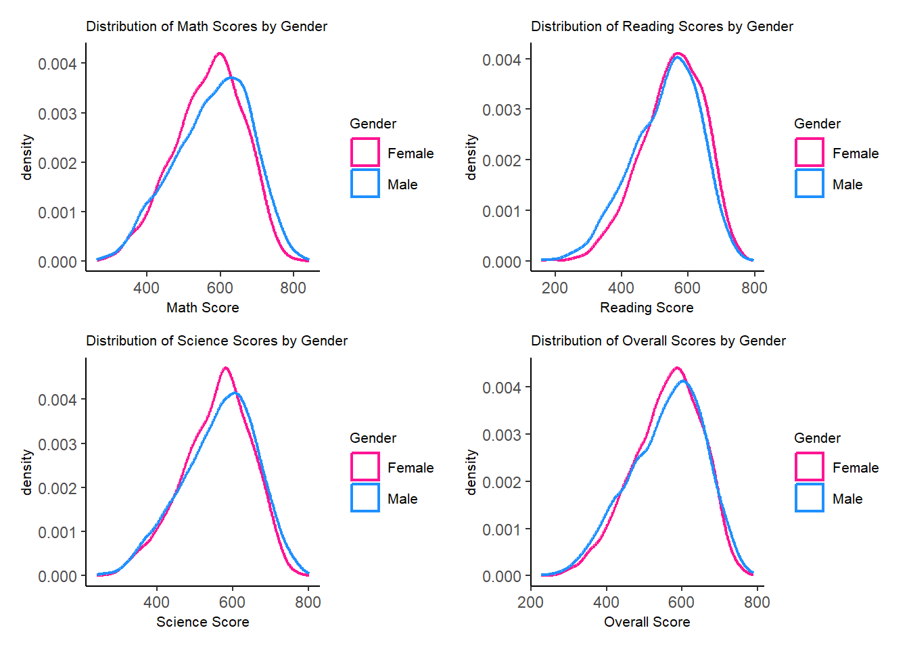
From the above four density curves, we can get the following observation:
Both male and female students exhibit a left-skewed trend in their performance scores across the three subjects and overall.
In terms of math performance, female scores being concentrated around 600, while male scores are concentrated around 650 suggests that, on average, males tend to achieve slightly higher scores in math compared to females.
Regarding reading performance, the concentration of both male and female scores around 550-600, approximately at 580, suggests that there is a similarity in the average performance of both genders in Reading. However, the observed differences in the lower and higher score ranges indicate certain gender-related patterns. The larger area under the curve below 500 for males implies that more male students fall into the lower score range (<500). Conversely, the larger area above 600 for females suggests that more female students achieve scores in the higher range (>600).
In science performance, the concentration of female scores below 600 (around 580), and male scores above 600 (around 610), indicates that, on average, the majority of male students outperform the majority of female students in Science. The larger area under the curve above 600 for males in the higher score range further supports this observation, suggesting that more male students achieve scores in the upper range (>600) compared to females.
In math, science, and overall performance, the distribution of male scores is more left-skewed compared to the distribution of female scores. This indicates that, in these subjects, male scores are relatively concentrated at higher levels. A left-skewed distribution suggests that the majority of students achieve higher scores, with relatively fewer lower scores. This implies that, overall, male students tend to perform more prominently in the higher score ranges in math, science, and overall performance.
The following set of violin plots offers a clearer comparison:
Show the code
p16 <- ggplot(data = PV_Avg_gender,
aes(x = as.factor(gender), y = Avg_PVMath, fill = as.factor(gender))) +
geom_violin(trim = FALSE) +
geom_boxplot(width = 0.1, fill = "white", color = "black") +
scale_fill_manual(values = c("1" = "pink", "2" = "dodgerblue"),
breaks = c("1", "2"),
labels = c("Female", "Male")) +
labs(fill = "Gender", x = NULL, y = "Math Score") +
ggtitle("Distribution of Math Scores by Gender") +
theme_classic() +
theme(
plot.title = element_text(size = 8),
axis.title = element_text(size = 8),
legend.text = element_text(size = 8),
legend.title = element_text(size = 8))
p17 <- ggplot(data = PV_Avg_gender,
aes(x = as.factor(gender), y = Avg_PVRead, fill = as.factor(gender))) +
geom_violin(trim = FALSE) +
geom_boxplot(width = 0.1, fill = "white", color = "black") +
scale_fill_manual(values = c("1" = "pink", "2" = "dodgerblue"),
breaks = c("1", "2"),
labels = c("Female", "Male")) +
labs(fill = "Gender", x = NULL, y = "Reading Score") +
ggtitle("Distribution of Reading Scores by Gender") +
theme_classic() +
theme(
plot.title = element_text(size = 8),
axis.title = element_text(size = 8),
legend.text = element_text(size = 8),
legend.title = element_text(size = 8))
p18 <- ggplot(data = PV_Avg_gender,
aes(x = as.factor(gender), y = Avg_PVScience, fill = as.factor(gender))) +
geom_violin(trim = FALSE) +
geom_boxplot(width = 0.1, fill = "white", color = "black") +
scale_fill_manual(values = c("1" = "pink", "2" = "dodgerblue"),
breaks = c("1", "2"),
labels = c("Female", "Male")) +
labs(fill = "Gender", x = NULL, y = "Science Score") +
ggtitle("Distribution of Science Scores by Gender") +
theme_classic() +
theme(
plot.title = element_text(size = 8),
axis.title = element_text(size = 8),
legend.text = element_text(size = 8),
legend.title = element_text(size = 8))
p19 <- ggplot(data = PV_Avg_gender,
aes(x = as.factor(gender), y = Avg_PVOverall, fill = as.factor(gender))) +
geom_violin(trim = FALSE) +
geom_boxplot(width = 0.1, fill = "white", color = "black") +
scale_fill_manual(values = c("1" = "pink", "2" = "dodgerblue"),
breaks = c("1", "2"),
labels = c("Female", "Male")) +
labs(fill = "Gender", x = NULL, y = "Overall Score") +
ggtitle("Distribution of Overall Scores by Gender") +
theme_classic() +
theme(
plot.title = element_text(size = 8),
axis.title = element_text(size = 8),
legend.text = element_text(size = 8),
legend.title = element_text(size = 8))
p16 + p17 + p18 + p19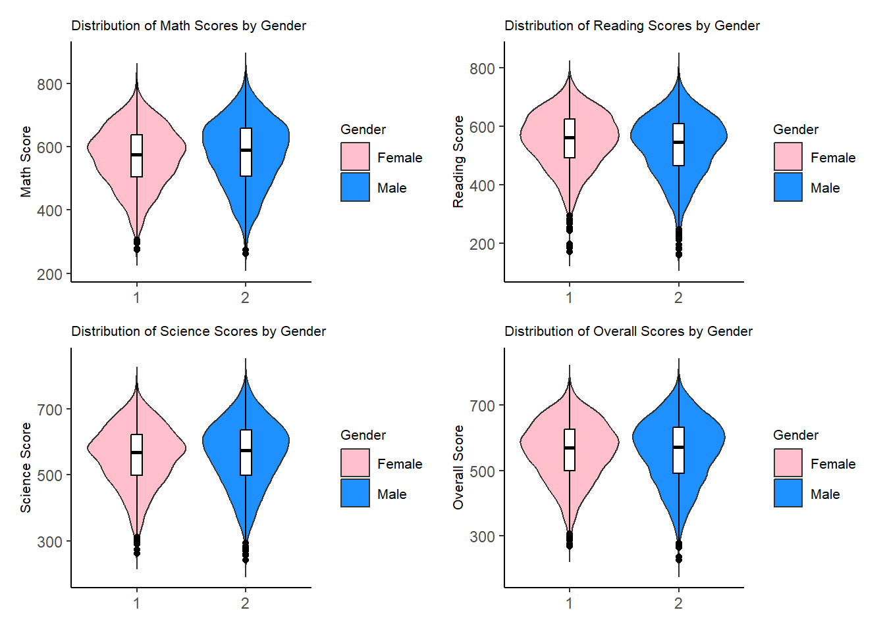
The violin plots for male students in math, science, and overall performance exhibit characteristics of narrower and more concentrated distributions, especially with higher scores corresponding to the widest part. This suggests that male students’ scores in these subjects are more consistent and concentrated, with a substantial portion achieving higher scores. The narrowness of the plots indicates relatively small variability in scores among male students, signifying a more uniform performance. In the widest part of the violin plot, it demonstrates that a considerable number of males perform well within this score range, further emphasizing the trend of males exhibiting concentrated and superior performance in mathematics, science, and overall academic achievement.
In contrast, concerning reading, the violin plots for both male and female students are generally similar, but the female plot has higher scores corresponding to the widest part. This implies that female students generally demonstrate a more balanced performance in reading, with a relatively larger proportion of females achieving higher scores. While both plots share similar overall trends, females may have a higher average score and more instances of high performance in reading. This difference reflects the relative advantage of females in reading, showcasing a more outstanding reading ability or higher academic proficiency.
4.1.2 Summary
Based on the above analysis, we can draw the conclusion that in math, science, and overall performance, males outperform females, with a greater number achieving higher scores. In reading, the performance difference between males and females is not significant, but there tends to be a higher number of females in the high-scoring range.
4.2 School
Next, incorporating “School ID” into the analysis.
In the student questionnaire data set, the column “CNTSCHID” represents School ID.
Show the code
CNTSTUID Avg_PVMath Avg_PVRead Avg_PVScience Avg_PVOverall School_ID
1 70200001 605.2533 667.4296 639.7873 637.4901 70200052
2 70200002 689.9528 627.6078 672.0703 663.2103 70200134
3 70200003 676.7768 582.9252 660.0384 639.9135 70200112
4 70200004 401.0528 361.3969 343.6425 368.6974 70200004
5 70200005 436.1151 475.6763 479.2390 463.6768 70200152
6 70200006 518.1055 431.4652 476.0031 475.1913 70200043This report will sum up and average the scores of survey participants from the same school to represent the school’s performance score.
Show the code
The total number of Singaporean schools surveyed in the questionnaire is 164The code chunk below calculates the mean scores for math, reading, and science, as well as overall performance, for all surveyed students in each school. This process provides representative scores for three subjects and overall performance for each school.
Show the code
PV_Avg_school_group <- PV_Avg_school %>%
group_by(School_ID) %>%
summarise(
Math_Score = mean(Avg_PVMath),
Read_Score = mean(Avg_PVRead),
Science_Score = mean(Avg_PVScience),
Overall_Score = mean(Avg_PVOverall)
)
write_rds(PV_Avg_school_group, "data/stu_qqq_SG_PV_Avg_school_group.rds")
head(PV_Avg_school_group)# A tibble: 6 × 5
School_ID Math_Score Read_Score Science_Score Overall_Score
<dbl> <dbl> <dbl> <dbl> <dbl>
1 70200001 725. 653. 698. 692.
2 70200002 535. 507. 534. 525.
3 70200003 740. 665. 714. 706.
4 70200004 510. 480. 494. 495.
5 70200005 547. 516. 529. 531.
6 70200006 487. 468. 477. 477.4.2.1 Analyse
The following violin plots with accompanying boxes illustrate the distribution of scores in math, reading, science, and overall performance across different schools:
Show the code
# Pivot the data to a longer format
Score_long <- PV_Avg_school_group %>%
pivot_longer(
cols = c("Math_Score", "Read_Score", "Science_Score", "Overall_Score"),
names_to = "Score_Type",
values_to = "Score"
)
# Calculate outliers using the IQR method
outliers <- Score_long %>%
group_by(Score_Type) %>%
summarize(
lower_limit = quantile(Score, 0.25) - 1.5 * IQR(Score),
upper_limit = quantile(Score, 0.75) + 1.5 * IQR(Score)
) %>%
left_join(Score_long, by = "Score_Type") %>%
filter(Score < lower_limit | Score > upper_limit)
# Identify the top 3 and bottom 2 schools for each Score_Type
selected_schools <- outliers %>%
group_by(Score_Type) %>%
arrange(desc(Score)) %>%
slice_head(n = 3) %>%
bind_rows(
outliers %>%
group_by(Score_Type) %>%
arrange(Score) %>%
slice_head(n = 2)
)
# Custom fill colors
custom_fill_colors <- c("Math_Score" = "#A0E57C",
"Read_Score" = "#8ABDFF",
"Science_Score" = "#FFE57F",
"Overall_Score" = "#FFB7C9")
# Plot violin plot with selected outlier labels
ggplot(Score_long, aes(x = Score_Type, y = Score, fill = Score_Type)) +
geom_violin(trim = FALSE, width = 0.7) +
geom_boxplot(width = 0.1, fill = "white", color = "black") + # Add boxplot for clarity
geom_text_repel(data = selected_schools, aes(label = School_ID),
box.padding = 0.8, point.padding = 0.5, max.iter = 500, size = 3, color = "black") +
scale_fill_manual(values = custom_fill_colors) +
labs(title = "Distribution of Scores by School",
x = "Score Type",
y = "Score",
fill = "Score Type") +
theme_classic()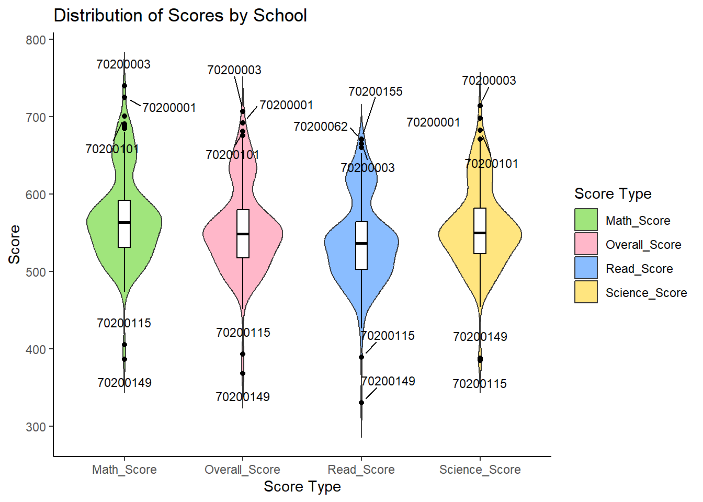
From plots above, we can get the following observation:
The violin plots for mathematics, reading, science, and overall performance exhibit bi-modal distributions, with a major peak concentrated in the 500-600 range and a minor peak in the 600-700 range. This suggests the presence of two distinct school groups with significantly different performance levels in these subjects and overall, with the larger group having lower performance.
In the box plots, the median line within the box for mathematics scores is the highest, indicating a higher median score. This implies that the median performance of students in mathematics is relatively better in Singaporean schools. The median line for science scores is the second-highest, suggesting a relatively higher median performance in science, though not surpassing mathematics. The lowest median line is observed in the box for reading scores, indicating a relatively lower median performance in reading. Overall, it can be inferred that students in Singaporean schools perform better in mathematics compared to science, and science performance is better than reading.
Three schools, namely “70200001,” “702001010,” and “70200003,” exhibit consistently high scores across all subjects and overall performance. On the other hand, two schools, “70200115” and “70200149,” consistently display low scores across all subjects and overall performance.
4.2.2 Summary
Based on the previous analysis, we can observe that Singaporean schools can be divided into a group of high-performing schools and a group of low-performing schools. The number of high-performing schools is lower than the number of low-performing schools. Singaporean schools demonstrate a higher level of education in math compared to science and outperform reading. Three prestigious schools in Singapore exhibit outstanding performance.
4.3 Socioeconomic Status
In this section, the report will sequentially select “Parent’s Highest Education Level” and “Home Possessions” to represent the analysis of the impact of socioeconomic status on student performance through an examination of their influence on student performance.
4.3.1 Parent’s Highest Education Level
In the questionnaire, the educational level of parents is recorded using the ISCED level. This report categorizes the ISCED levels of students’ parents into the following groups: ISCED Level <4, ISCED Level 4, ISCED Level 5, ISCED Level 6, ISCED Level 7, ISCED Level 8. The chart below illustrates the educational levels corresponding to different ISCED levels.
Comparing the ISCED levels of parents and incorporating the highest level into the analysis, the following code block implements this process:
Show the code
# Mom's edu level
MomEdu <- cbind(stu_qqq_SG[, c("CNTSTUID", "ST006Q01JA", "ST006Q02JA", "ST006Q03JA", "ST006Q04JA", "ST006Q05JA")])
get_highest_level <- function(row) {
level_column <- grep("^ST006Q", names(row))
if (any(!is.na(row[level_column]) & row[level_column] == 1)) {
max_level_index <- which.max(row[level_column] == 1)
return(9 - max_level_index)
} else {
return("<4")
}
}
MomEdu$Mom_Level <- apply(MomEdu, 1, get_highest_level)
# Dad's edu level
DadEdu <- cbind(stu_qqq_SG[, c("CNTSTUID", "ST008Q01JA", "ST008Q02JA", "ST008Q03JA", "ST008Q04JA", "ST008Q05JA")])
get_highest_level <- function(row) {
level_column <- grep("^ST008Q", names(row))
if (any(!is.na(row[level_column]) & row[level_column] == 1)) {
max_level_index <- which.max(row[level_column] == 1)
return(9 - max_level_index)
} else {
return("<4")
}
}
DadEdu$Dad_Level <- apply(DadEdu, 1, get_highest_level)
#Get the highest edu level
Parent_edu_level <- bind_cols(select(MomEdu, CNTSTUID, Mom_Level), select(DadEdu, Dad_Level)) %>%
mutate(Parent_highest_level = pmax(Mom_Level, Dad_Level, na.rm = TRUE))
write_rds(Parent_edu_level, "data/stu_qqq_SG_Parent_edu_level.rds")
PV_Avg_Parent_edu_highestlevel <- cbind(PV_Avg, Parent_highest_level = Parent_edu_level$Parent_highest_level)
write_rds(PV_Avg_Parent_edu_highestlevel, "data/stu_qqq_SG_PV_Avg_Parent_edu_highestlevel.rds")
head(PV_Avg_Parent_edu_highestlevel) CNTSTUID Avg_PVMath Avg_PVRead Avg_PVScience Avg_PVOverall
1 70200001 605.2533 667.4296 639.7873 637.4901
2 70200002 689.9528 627.6078 672.0703 663.2103
3 70200003 676.7768 582.9252 660.0384 639.9135
4 70200004 401.0528 361.3969 343.6425 368.6974
5 70200005 436.1151 475.6763 479.2390 463.6768
6 70200006 518.1055 431.4652 476.0031 475.1913
Parent_highest_level
1 6
2 5
3 <4
4 4
5 5
6 7Let’s see the distribution of scores by ISCED level:
Show the code
ggplot(data=PV_Avg_Parent_edu_highestlevel, aes(x = Avg_PVMath, fill = Parent_highest_level)) +
geom_density(alpha = 1, color = NA) +
facet_grid(Parent_highest_level ~ ., scales = "free_y", switch = "y") +
scale_fill_brewer(palette = "Blues") +
labs(x = "Math Score", fill = "<ISCED> Level") +
ggtitle("Distribution of Math Score by Parent's Highest Education Level") +
theme_clean() +
theme(
plot.title = element_text(size = 12)
)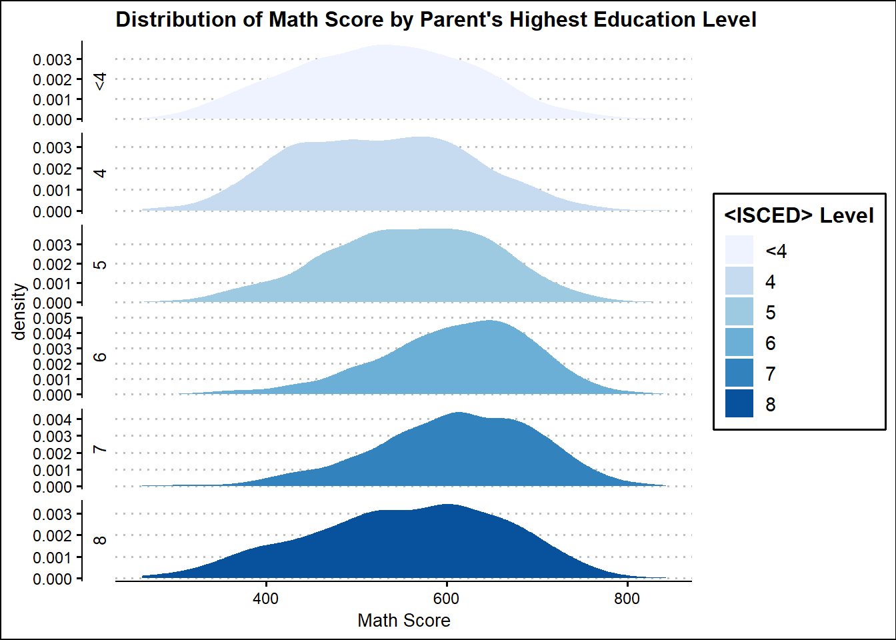
Show the code
ggplot(data=PV_Avg_Parent_edu_highestlevel, aes(x = Avg_PVRead, fill = Parent_highest_level)) +
geom_density(alpha = 1, color = NA) +
facet_grid(Parent_highest_level ~ ., scales = "free_y", switch = "y") +
scale_fill_brewer(palette = "Greens") +
labs(x="Reading Score", fill = "<ISCED> level") +
ggtitle("Distribution of Reading Score by Parent's Highest Education Level") +
theme_clean() +
theme(
plot.title = element_text(size = 12)
)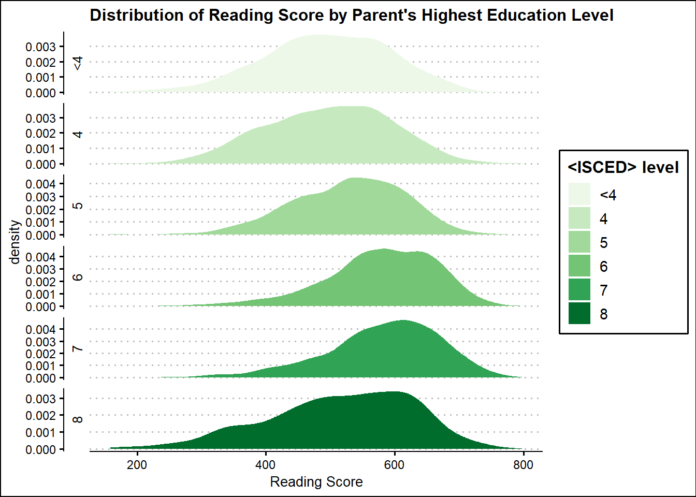
Show the code
ggplot(data=PV_Avg_Parent_edu_highestlevel, aes(x = Avg_PVScience, fill = Parent_highest_level)) +
geom_density(alpha = 1, color = NA) +
facet_grid(Parent_highest_level ~ ., scales = "free_y", switch = "y") +
scale_fill_brewer(palette = "Reds") +
labs(x="Science Score", fill = "<ISCED> level") +
ggtitle("Distribution of Science Score by Parent's Highest Education Level") +
theme_clean() +
theme(
plot.title = element_text(size = 12)
)Show the code
ggplot(data=PV_Avg_Parent_edu_highestlevel, aes(x = Avg_PVOverall, fill = Parent_highest_level)) +
geom_density(alpha = 1, color = NA) +
facet_grid(Parent_highest_level ~ ., scales = "free_y", switch = "y") +
scale_fill_brewer(palette = "Purples") +
labs(x="Overall Score", fill = "<ISCED> level") +
ggtitle("Distribution of Overall Score by Parent's Highest Education Level") +
theme_clean() +
theme(
plot.title = element_text(size = 12)
)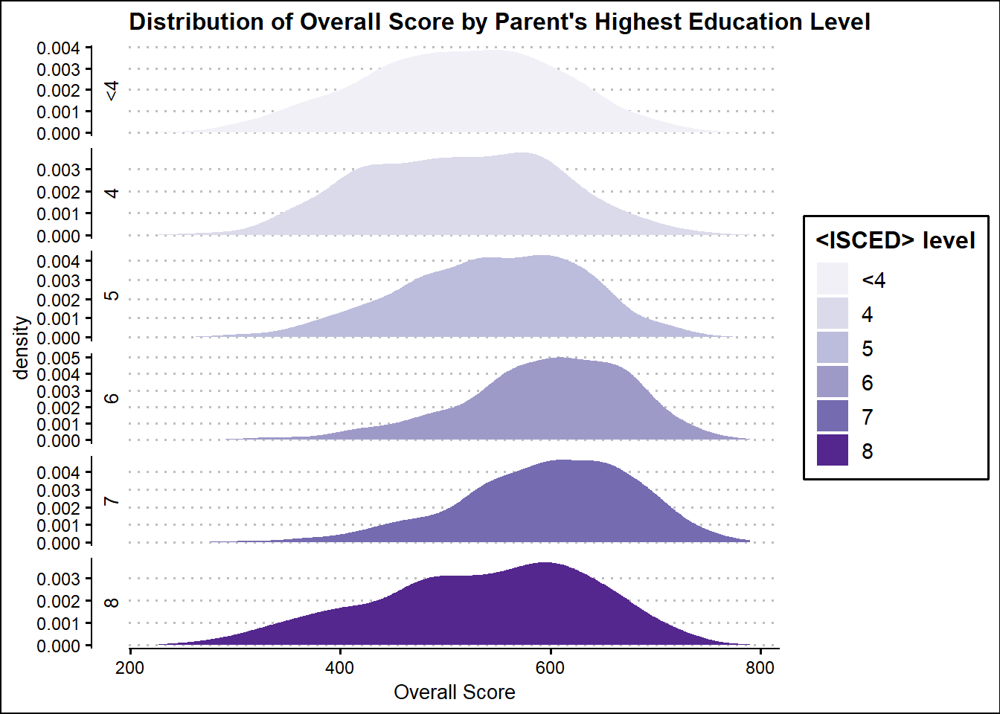
From the above plots, we can observe that：
Through the observation of central tendencies, students exhibit the highest performance when their parents have an ISCED level of 6 (bachelor’s) and 7 (master’s), spanning across various subjects as well as overall scores. Surprisingly, when parents have an ISCED level of 8 (doctoral), students’ performance in individual subjects and overall is only at a moderate level, resembling the score distribution of students with an ISCED level of 5 (certificate, diploma, and associate degree). Students with parents having an ISCED level of 4 or below demonstrate poorer performance.
Observing the following violin plots:
Show the code
ggplot(data = PV_Avg_Parent_edu_highestlevel, aes(x = Parent_highest_level, y = Avg_PVMath, fill = Parent_highest_level)) +
geom_violin() +
geom_boxplot(width = 0.3, fill = "white", color = "black", alpha = 1) +
scale_fill_brewer(palette = "Blues") +
labs(x = "Parent's highest <ISCED> level", y = "Math Score", fill = "<ISCED> level") +
ggtitle("Violin Plots with Boxplots of Math Score by Parent's Highest Education Level") +
theme_clean() +
theme(
plot.title = element_text(size = 12)
)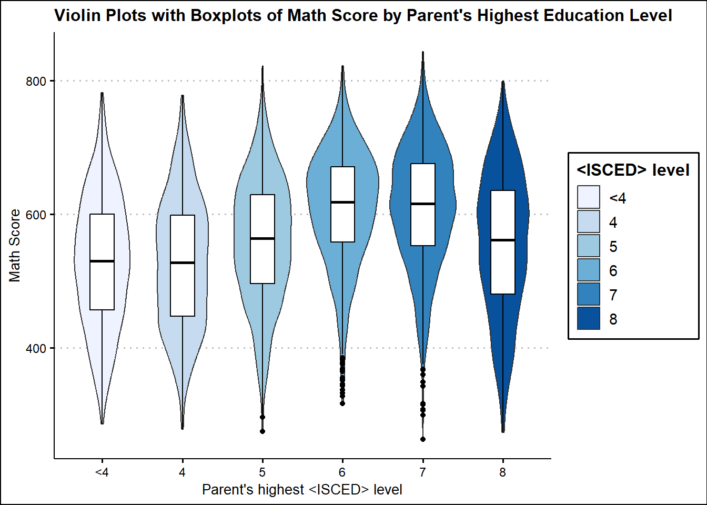
Show the code
ggplot(data = PV_Avg_Parent_edu_highestlevel, aes(x = Parent_highest_level, y = Avg_PVRead, fill = Parent_highest_level)) +
geom_violin() +
geom_boxplot(width = 0.3, fill = "white", color = "black", alpha = 1) +
scale_fill_brewer(palette = "Greens") +
labs(x = "Parent's highest <ISCED> level", y = "Math Score", fill = "<ISCED> level") +
ggtitle("Violin Plots with Boxplots of Reading Score by Parent's Highest Education Level") +
theme_clean() +
theme(
plot.title = element_text(size = 12)
)Show the code
ggplot(data = PV_Avg_Parent_edu_highestlevel, aes(x = Parent_highest_level, y = Avg_PVScience, fill = Parent_highest_level)) +
geom_violin() +
geom_boxplot(width = 0.3, fill = "white", color = "black", alpha = 1) +
scale_fill_brewer(palette = "Reds") +
labs(x = "Parent's highest <ISCED> level", y = "Science Score", fill = "<ISCED> level") +
ggtitle("Violin Plots with Boxplots of Science Score by Parent's Education Level") +
theme_clean() +
theme(
plot.title = element_text(size = 12)
)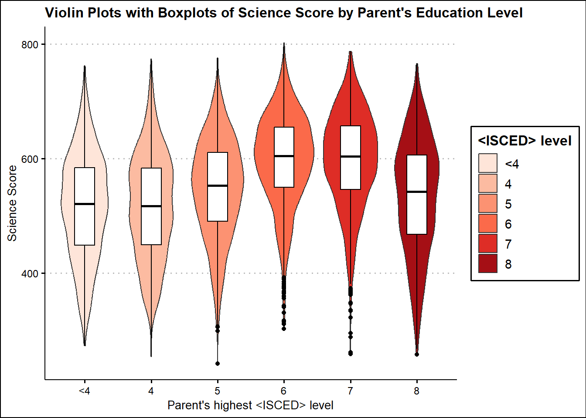
Show the code
ggplot(data = PV_Avg_Parent_edu_highestlevel, aes(x = Parent_highest_level, y = Avg_PVOverall, fill = Parent_highest_level)) +
geom_violin() +
geom_boxplot(width = 0.3, fill = "white", color = "black", alpha = 1) +
scale_fill_brewer(palette = "Purples") +
labs(x = "Parent's highest <ISCED> level", y = "Overall Score", fill = "<ISCED> level") +
ggtitle("Violin Plots with Boxplots of Overall Score by Parent's Education Level") +
theme_clean() +
theme(
plot.title = element_text(size = 12)
)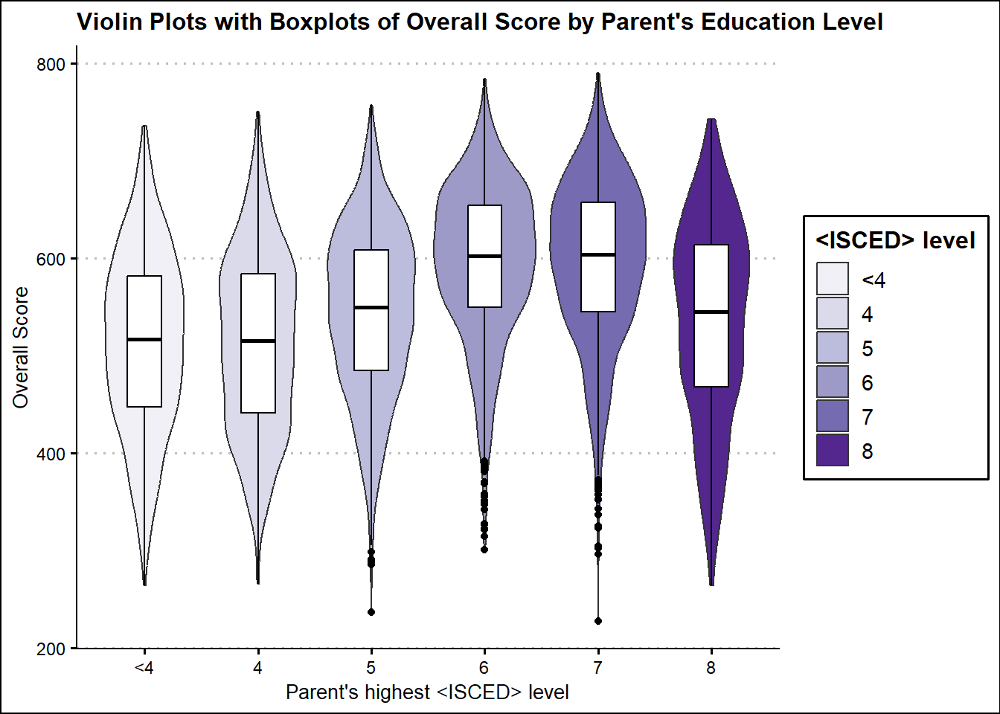
We can observe the following from the above plots:
Some violin plots are uni-modal, while others exhibit bi-modal shapes. Bi-modal violin plots suggest that students of parents with the same ISCED level have scores distributed into different groups, with some achieving higher scores and others scoring lower.
Violin plots for students whose parents have an ISCED level of 8 (doctoral) are elongated in all three subjects and overall. This may indicate a wider distribution of scores across subjects, suggesting greater variability. This situation suggests that students with parents holding a doctoral degree show significant variations in performance, with some achieving high scores and others performing poorly. Compared to students with parents at other ISCED level, this reflects uncertainty and diversity in performance within doctoral family backgrounds.
Violin plots for students whose parents have an ISCED level of 6 (bachelor’s) and 7 (master’s) are short and stout in all three subjects and overall. This suggests that these students have a relatively concentrated distribution of scores, indicating lower variability. This situation implies that most students with parents holding bachelor’s and master’s degrees exhibit a relatively consistent level of academic performance, with fewer extremes of high or low scores. Compared to students with parents at other ISCED level, these students from bachelor’s and master’s backgrounds demonstrate a more stable and consistent performance.
4.3.2 Home Possessions
In this section, the report will sum up some data in the student questionnaire data set that reflects aspects of home processions (HOMEPOS). The sum of this data will be used to represent the HOMEPOS. Subsequently, an analysis will be conducted to examine the impact of HOMEPOS on student performance.
By the following code block, the calculation of HOMOPOS can be carried out:
Show the code
HOMEPOS <- stu_qqq_SG %>%
mutate(HOMEPOS_Number = coalesce(ST251Q01JA, 0) +
coalesce(ST251Q02JA, 0) +
coalesce(ST251Q03JA, 0) +
coalesce(ST251Q04JA, 0) +
coalesce(ST251Q06JA, 0) +
coalesce(ST251Q07JA, 0) +
coalesce(ST253Q01JA, 0) +
coalesce(ST255Q01JA, 0))
PV_Avg_HOMEPOS <- cbind(PV_Avg, Home_Possessions = HOMEPOS$HOMEPOS_Number)
write_rds(PV_Avg_HOMEPOS, "data/stu_qqq_SG_PV_Avg_HOMEPOS.rds")
head(PV_Avg_HOMEPOS) CNTSTUID Avg_PVMath Avg_PVRead Avg_PVScience Avg_PVOverall Home_Possessions
1 70200001 605.2533 667.4296 639.7873 637.4901 29
2 70200002 689.9528 627.6078 672.0703 663.2103 29
3 70200003 676.7768 582.9252 660.0384 639.9135 23
4 70200004 401.0528 361.3969 343.6425 368.6974 21
5 70200005 436.1151 475.6763 479.2390 463.6768 22
6 70200006 518.1055 431.4652 476.0031 475.1913 20Nesxt, let’s see how HOMOPOS influence students’ performance.
Show the code
ggplot(data = PV_Avg_HOMEPOS, aes(x = factor(Home_Possessions), y = Avg_PVMath)) +
geom_boxplot(width = 0.5, fill = "lightblue") +
stat_summary(fun = "median", geom = "line", aes(group = 1), color = "red", linewidth = 1) +
labs(x = "HOMEPOS", y = "Math Score", title = "Distribution of Math Scores by HOMEPOS") +
theme_classic()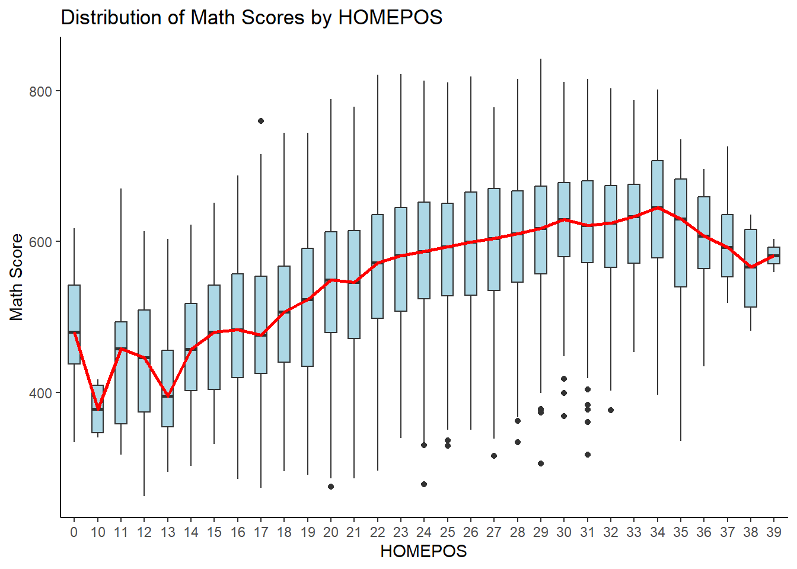
Show the code
ggplot(data = PV_Avg_HOMEPOS, aes(x = factor(Home_Possessions), y = Avg_PVRead)) +
geom_boxplot(width = 0.5, fill = "lightgreen") +
stat_summary(fun = "median", geom = "line", aes(group = 1), color = "red", linewidth = 1) +
labs(x = "HOMEPOS", y = "Reading Score", title = "Distribution of Reading Scores by HOMEPOS") +
theme_classic()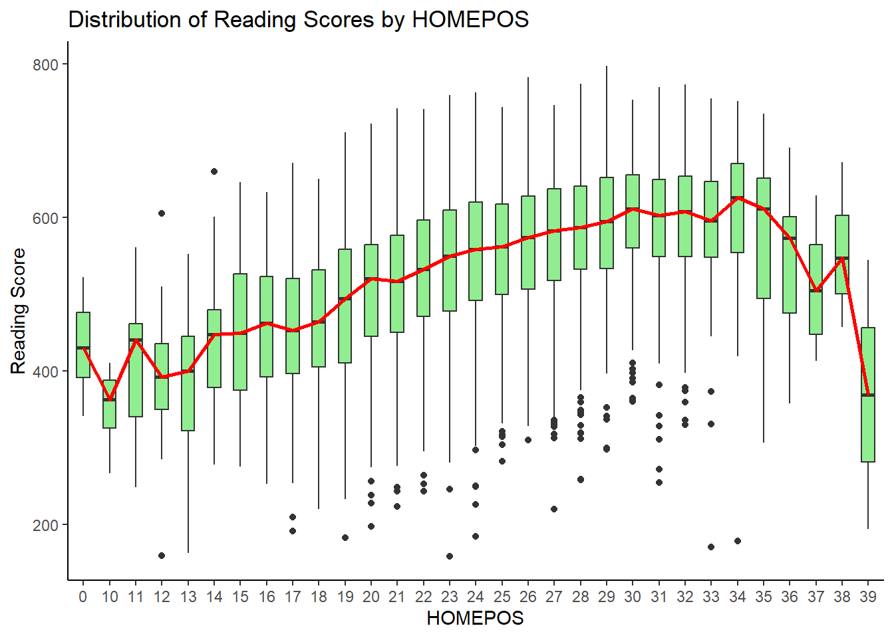
Show the code
ggplot(data = PV_Avg_HOMEPOS, aes(x = factor(Home_Possessions), y = Avg_PVScience)) +
geom_boxplot(width = 0.5, fill = "pink") +
stat_summary(fun = "median", geom = "line", aes(group = 1), color = "red", linewidth = 1) +
labs(x = "HOMEPOS", y = "Science Score", title = "Distribution of Science Scores by HOMEPOS") +
theme_classic()Show the code
ggplot(data = PV_Avg_HOMEPOS, aes(x = factor(Home_Possessions), y = Avg_PVOverall)) +
geom_boxplot(width = 0.5, fill = "#D2B4E8") +
stat_summary(fun = "median", geom = "line", aes(group = 1), color = "red", linewidth = 1) +
labs(x = "HOMEPOS", y = "Overall Score", title = "Distribution of Overall Scores by HOMEPOS") +
theme_classic()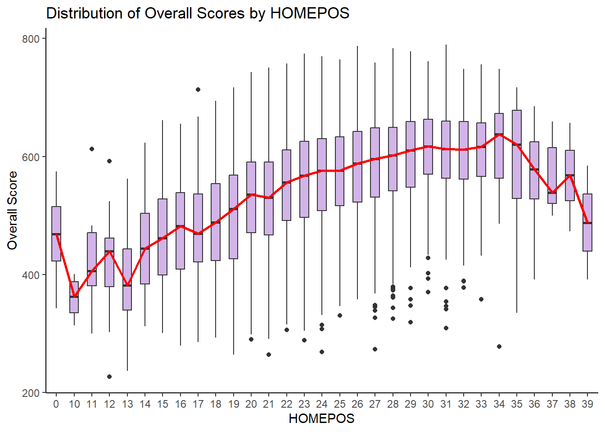
Based on the observed trends from the above plots, we can see that:
As the HOMEPOS values increase, there is an upward trend in students’ scores. However, after reaching a certain point, there seems to be a decline. Specifically, when HOMEPOS values exceed 35, the performance in three subjects and overall appears to decrease. This suggests that an increase in HOMEPOS contributes positively to student performance up to a certain point, but when the HOMEPOS values become excessively high, student performance may start to decline.
5. Conclusion
This report analyzes the performance of Singaporean students in math, reading, science, and overall by using the PISA 2022 data set, as well as the influencing factors. It was found that Singaporean students excel in math, followed by science, and then reading. Male students perform better in math and science, while female students exhibit stronger performance in reading. Singaporean schools are categorized into high-level and low-level groups, with the number of high-level schools being lower, including three schools with particularly outstanding performance. The study also reveals that students from families where parents have bachelor’s or master’s degrees demonstrate the best performance. Additionally, the home possessions positively influences students’ performance to some extent.
Reference
PISA Data Analysis Manual: SPSS, Second Edition
How to prepare and analyse the PISA database
Computer-Based Student Questionnaire for Pisa 2022 - Main Survey Version